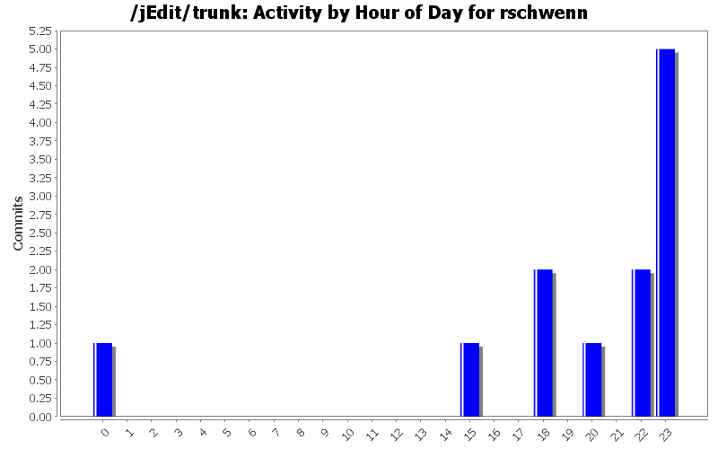
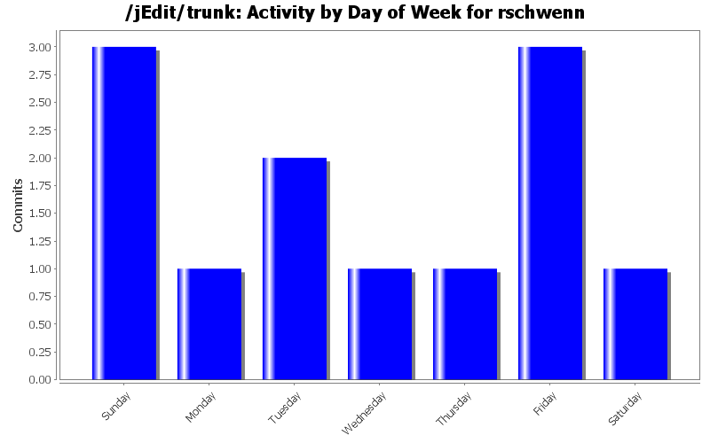
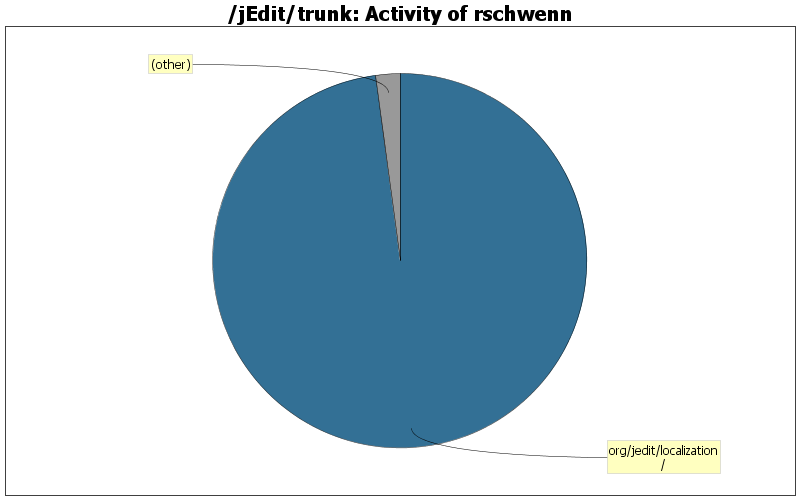

| Directory | Changes | Lines of Code | Lines per Change |
|---|---|---|---|
| Totals | 12 (100.0%) | 287 (100.0%) | 23.9 |
| org/jedit/localization/ | 11 (91.7%) | 281 (97.9%) | 25.5 |
| macros/Misc/ | 1 (8.3%) | 6 (2.1%) | 6.0 |

German language update
19 lines of code changed in 1 file:
Macro Display_Character_Code enhanced (Patch ticket 591)
6 lines of code changed in 1 file:
German language update
170 lines of code changed in 1 file:
German language update
20 lines of code changed in 1 file:
German language update
5 lines of code changed in 1 file:
German language update
5 lines of code changed in 1 file:
German language update
34 lines of code changed in 1 file:
German language update
1 lines of code changed in 1 file:
German language bugfix
1 lines of code changed in 1 file:
German language update (new macro's name)
2 lines of code changed in 1 file:
German language update
20 lines of code changed in 1 file:
lang_de.properties file for core - bugfix
4 lines of code changed in 1 file: